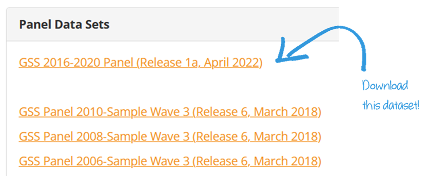
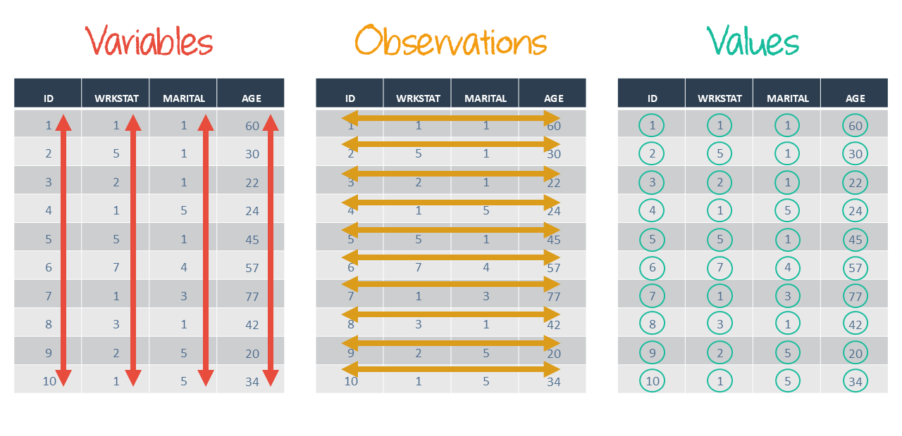
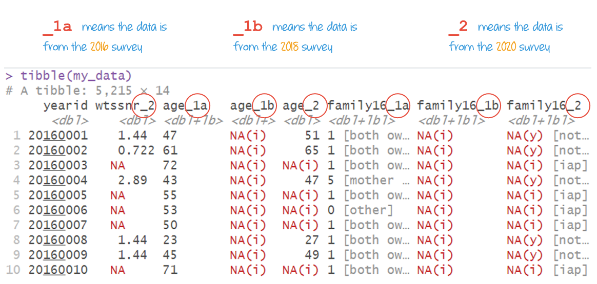
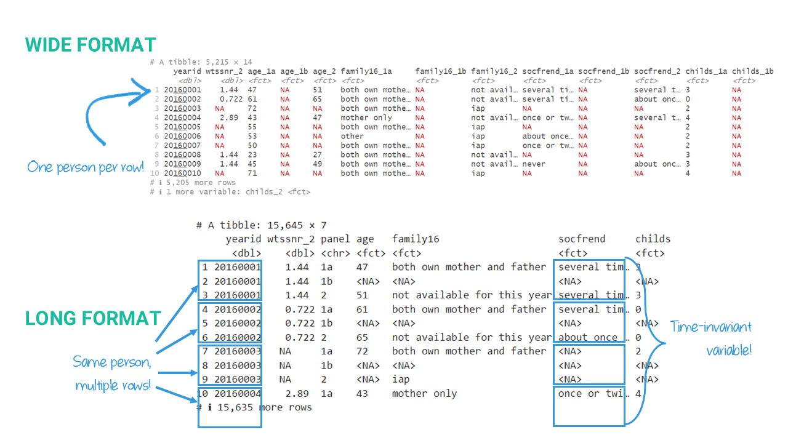
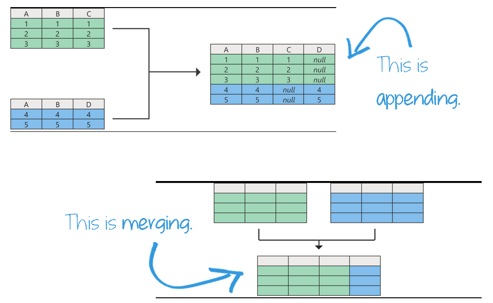

Data Management II
Agenda
- Manipulating Dataframes
- Joining Dataframes
Learning objectives
By the end of the lecture, you will be able to …
- Reshape data between wide and long formats
- Reorder columns and rows
- Combine and expand dataframes
Code-along 04
Download and open code-along-04.qmd
Packages
Load the standard packages.
GSS Panel Data: Download
https://gss.norc.org/get-the-data/stata

Heads Up!
Save the unzipped file in your class data folder.
GSS Panel Data: Load
# Use here() to construct the file path
gss_panel.dta <- here("data", "GSS_2020_panel_stata_1a/gss2020panel_r1a.dta")
#load the data using `haven::read_dta()`
data <- read_dta(gss_panel.dta)
# Or, do both at the same time!
# data <- read_dta(here("data", "GSS_2020_panel_stata_1a/gss2020panel_r1a.dta"))GSS 2016-2020 Panel Dataset
Study of former 2016 and 2018 GSS respondents were interviewed again in 2020
- Variables from 2016 (Wave 1a) have _1a appended
- Variables from 2018 (Wave 1b) have _1b appended
- Variables from 2020 (Wave 2) have _2 appended
GSS 2016-2020 Panel Dataset
# A tibble: 10 × 7
yearid year_1a year_1b year_2 age_1a age_1b age_2
<dbl> <dbl> <dbl> <dbl> <dbl+lbl> <dbl+lbl> <dbl+lbl>
1 20182183 NA 2018 NA NA(i) 52 NA(i)
2 20180711 NA 2018 NA NA(i) 19 NA(i)
3 20182189 NA 2018 2020 NA(i) 37 39
4 20160354 2016 NA NA 56 NA(i) NA(i)
5 20180452 NA 2018 2020 NA(i) 29 31
6 20181503 NA 2018 2020 NA(i) 58 60
7 20162744 2016 NA 2020 71 NA(i) 75
8 20160315 2016 NA 2020 69 NA(i) 73
9 20160170 2016 NA NA 75 NA(i) NA(i)
10 20161888 2016 NA NA 71 NA(i) NA(i) Manipulating Dataframes
Selection helpers
Match variables according to a given pattern.
starts_with(): Starts with an exact prefix.ends_with(): Ends with an exact suffix.contains(): Contains a literal string.- …
head() & tail()
Look at the first few column names and first few rows.
# A tibble: 5 × 14
yearid wtssnr_2 age_1a age_1b age_2 family16_1a family16_1b family16_2
<dbl> <dbl> <fct> <fct> <fct> <fct> <fct> <fct>
1 20160001 1.44 47 <NA> 51 both own mother … <NA> not avail…
2 20160002 0.722 61 <NA> 65 both own mother … <NA> not avail…
3 20160003 NA 72 <NA> <NA> both own mother … <NA> iap
4 20160004 2.89 43 <NA> 47 mother only <NA> not avail…
5 20160005 NA 55 <NA> <NA> both own mother … <NA> iap
# ℹ 6 more variables: socfrend_1a <fct>, socfrend_1b <fct>, socfrend_2 <fct>,
# childs_1a <fct>, childs_1b <fct>, childs_2 <fct>Look at the first few column names and last few rows.
# A tibble: 5 × 14
yearid wtssnr_2 age_1a age_1b age_2 family16_1a family16_1b family16_2
<dbl> <dbl> <fct> <fct> <fct> <fct> <fct> <fct>
1 20182344 NA <NA> 37 <NA> <NA> mother and stepf… iap
2 20182345 0.995 <NA> 75 77 <NA> both own mother … not avail…
3 20182346 0.995 <NA> 67 70 <NA> both own mother … not avail…
4 20182347 NA <NA> 72 <NA> <NA> both own mother … iap
5 20182348 NA <NA> 79 <NA> <NA> both own mother … iap
# ℹ 6 more variables: socfrend_1a <fct>, socfrend_1b <fct>, socfrend_2 <fct>,
# childs_1a <fct>, childs_1b <fct>, childs_2 <fct>Reminder: Tidy data


This data is NOT tidy!
Some column names include values of a variable (survey year).
# A tibble: 15,645 × 7
yearid wtssnr_2 panel age family16 socfrend childs
<dbl> <dbl> <chr> <fct> <fct> <fct> <fct>
1 20160001 1.44 1a 47 both own mother and father several tim… 3
2 20160001 1.44 1b <NA> <NA> <NA> <NA>
3 20160001 1.44 2 51 not available for this year several tim… 3
4 20160002 0.722 1a 61 both own mother and father several tim… 0
5 20160002 0.722 1b <NA> <NA> <NA> <NA>
6 20160002 0.722 2 65 not available for this year about once … 0
7 20160003 NA 1a 72 both own mother and father <NA> 2
8 20160003 NA 1b <NA> <NA> <NA> <NA>
9 20160003 NA 2 <NA> iap <NA> <NA>
10 20160004 2.89 1a 43 mother only once or twi… 4
# ℹ 15,635 more rowsThis data is tidy!
Each variable in its own column, and each observation in its own row.

Reshaping data

pivot_longer()
my_data <- my_data |>
pivot_longer(
cols = 3:14,
names_to = c(".value", "panel"),
names_sep = "_")
head(my_data, n = 5)- 1
-
cols =specifies which columns to pivot; - 2
-
names_to =creates multiple value columns from the name parts and a new column that stores the identifier. - 3
-
names_sep =where to split the names into a variable (.value) and what to use as a key identifier
# A tibble: 5 × 7
yearid wtssnr_2 panel age family16 socfrend childs
<dbl> <dbl> <chr> <fct> <fct> <fct> <fct>
1 20160001 1.44 1a 47 both own mother and father several time… 3
2 20160001 1.44 1b <NA> <NA> <NA> <NA>
3 20160001 1.44 2 51 not available for this year several time… 3
4 20160002 0.722 1a 61 both own mother and father several time… 0
5 20160002 0.722 1b <NA> <NA> <NA> <NA> pivot_wider()
my_data |> # not overwriting my_data
pivot_wider(
names_from = panel,
values_from = c(-yearid, -wtssnr_2))
head(my_data, n = 5)- 1
- Increasing the number of columns and decreasing the number of rows
- 2
- Which column to get the name of the output columns
- 3
- Which columns to exclude from the pivot
# A tibble: 5,215 × 17
yearid wtssnr_2 panel_1a panel_1b panel_2 age_1a age_1b age_2 family16_1a
<dbl> <dbl> <chr> <chr> <chr> <fct> <fct> <fct> <fct>
1 20160001 1.44 1a 1b 2 47 <NA> 51 both own mot…
2 20160002 0.722 1a 1b 2 61 <NA> 65 both own mot…
3 20160003 NA 1a 1b 2 72 <NA> <NA> both own mot…
4 20160004 2.89 1a 1b 2 43 <NA> 47 mother only
5 20160005 NA 1a 1b 2 55 <NA> <NA> both own mot…
6 20160006 NA 1a 1b 2 53 <NA> <NA> other
7 20160007 NA 1a 1b 2 50 <NA> <NA> both own mot…
8 20160008 1.44 1a 1b 2 23 <NA> 27 both own mot…
9 20160009 1.44 1a 1b 2 45 <NA> 49 both own mot…
10 20160010 NA 1a 1b 2 71 <NA> <NA> both own mot…
# ℹ 5,205 more rows
# ℹ 8 more variables: family16_1b <fct>, family16_2 <fct>, socfrend_1a <fct>,
# socfrend_1b <fct>, socfrend_2 <fct>, childs_1a <fct>, childs_1b <fct>,
# childs_2 <fct>
# A tibble: 5 × 7
yearid wtssnr_2 panel age family16 socfrend childs
<dbl> <dbl> <chr> <fct> <fct> <fct> <fct>
1 20160001 1.44 1a 47 both own mother and father several time… 3
2 20160001 1.44 1b <NA> <NA> <NA> <NA>
3 20160001 1.44 2 51 not available for this year several time… 3
4 20160002 0.722 1a 61 both own mother and father several time… 0
5 20160002 0.722 1b <NA> <NA> <NA> <NA> Recode the reshaped variable
my_data <- my_data |>
mutate(panel = case_when(
panel == "1a" ~ 2016,
panel == "1b" ~ 2018,
panel == "2" ~ 2020,
TRUE ~ NA_integer_))
head(my_data, n = 3)# A tibble: 3 × 7
yearid wtssnr_2 panel age family16 socfrend childs
<dbl> <dbl> <dbl> <fct> <fct> <fct> <fct>
1 20160001 1.44 2016 47 both own mother and father several time… 3
2 20160001 1.44 2018 <NA> <NA> <NA> <NA>
3 20160001 1.44 2020 51 not available for this year several time… 3 Heads Up!
family16 is a time-invariant variable.
relocate()
# A tibble: 2 × 7
panel yearid wtssnr_2 age family16 socfrend childs
<dbl> <dbl> <dbl> <fct> <fct> <fct> <fct>
1 2016 20160001 1.44 47 both own mother and father several times… 3
2 2018 20160001 1.44 <NA> <NA> <NA> <NA> arrange()
# A tibble: 5 × 3
yearid panel age
<dbl> <dbl> <fct>
1 20160001 2016 47
2 20160002 2016 61
3 20160003 2016 72
4 20160004 2016 43
5 20160005 2016 55 Joining Dataframes
appending v.s. merging
APPEND
add new observations (rows) to existing variables
MERGE
add new variables (columns) to existing observations (many merge types)
appending v.s. merging

Example datasets
dataframe 1
coupleid name age
1 2 John 42
2 1 Megan 36
3 3 Bin 38dataframe 2
coupleid name age
1 1 Sue 40
2 3 Ye-jin 39
3 2 Chrissy 35dataframe 3
coupleid marstat numchild country
1 3 1 1 S.Korea
2 1 0 0 US
3 4 1 2 Canadaappend data with bind_rows()
merge data with joins
add columns from df1 to df2, matching observations based on the keys
left_join()keeps all observations indf1.right_join()keeps all observations indf2.full_join()keeps all observations indf1anddf2.inner_join()only keeps observations fromdf1that have a matching key indf2
left_join()

right_join()

full_join()

inner_join()

Think Like a Statistician
Are married people above or below average in internet use or income? Does it vary by survey year?
How do we find out?
Answering this research question takes a few steps. But, the first step is to create a dataframe with all the necessary information.
Can you reproduce this table?
# A tibble: 6 × 7
yearid panel marital wwwhr realrinc avg_www avg_inc
<dbl> <dbl> <fct> <dbl+lbl> <dbl> <dbl> <dbl>
1 20160001 2016 married 15 164382. 14.2 24929.
2 20160001 2018 <NA> NA(i) NA 14.8 26103.
3 20160001 2020 married 20 147659. 15.0 28222.
4 20160002 2016 never married 5 25740 14.2 24929.
5 20160002 2018 <NA> NA(i) NA 14.8 26103.
6 20160002 2020 never married 10 23980 15.0 28222.What’s your conclusion to our research question?
# Income status
ctable(think_married$income_status, think_married$panel,
prop = "c",
format = "p",
useNA = "no",
headings = FALSE
)
--------------- ------- -------------- -------------- -------------- ---------------
panel 2016 2018 2020 Total
income_status
Above Average 328 ( 43.8%) 235 ( 38.3%) 247 ( 45.6%) 810 ( 42.5%)
Below Average 421 ( 56.2%) 379 ( 61.7%) 295 ( 54.4%) 1095 ( 57.5%)
Total 749 (100.0%) 614 (100.0%) 542 (100.0%) 1905 (100.0%)
--------------- ------- -------------- -------------- -------------- ---------------# Internet status
ctable(think_married$internet_status, think_married$panel,
prop = "c",
format = "p",
useNA = "no",
headings = FALSE
)
----------------- ------- -------------- -------------- -------------- ---------------
panel 2016 2018 2020 Total
internet_status
Above Average 207 ( 29.4%) 180 ( 29.4%) 165 ( 33.4%) 552 ( 30.5%)
Below Average 496 ( 70.6%) 433 ( 70.6%) 329 ( 66.6%) 1258 ( 69.5%)
Total 703 (100.0%) 613 (100.0%) 494 (100.0%) 1810 (100.0%)
----------------- ------- -------------- -------------- -------------- ---------------